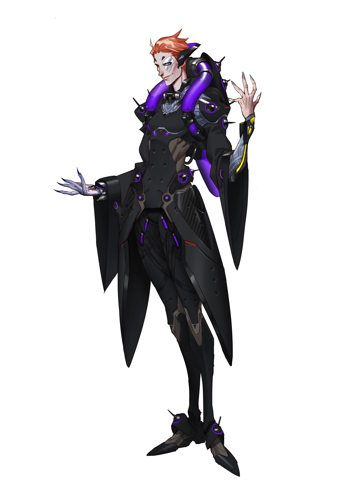

- Biotic Grasp
Using her left hand, Moira expends biotic energy to
heal allies in front of her. Her right hand fires a long-range beam weapon that saps enemies’ health,
healing Moira and replenishing her biotic energy.
- Biotic Orb
Moira launches a rebounding biotic sphere; she
can choose between a regeneration effect that heals the allies it passes through, or a decay
effect that deals damage to enemies. .
|

|
- Fade
Moira quickly teleports a short distance.
- Coalescence
Moira channels a long-range beam that both
heals allies and bypasses barriers to damage her enemies..
|